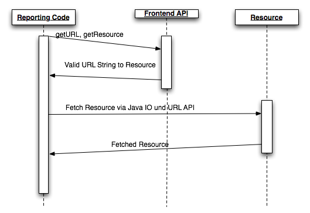

Introduction
Reporting is a general problem within the domain of web applications. Usually three Methods of reporting are applied within a web application.
- On demand reporting, reports are generated on demand within a request.
- In Server Reporting, reports are generated within a single server but may be generated asynchronously within a separated reporting task.
- Stand alone reporting server. The reports are generated within a separated reporting server, which runs in its own process space!
All of the above metioned methods can be covered by Weblets via separate access methods!
On Demand Reporting
This is the easiest method. Basically an on demand report is generated on the fly within a single request.

As we can see in Figure 1 Weblets supports this reporting case with its own frontend apis. Weblets always serves a valid URL String to the resource via its frontend apis, which then can be processed by the standard java URL api of Java for further processing.
The following picture displays the execution flow for this reporting usecase:
Figure 2. On Demand Reporting Workflow " />As displayed, only the calls to the frontend api are utilized, the other parts are pure Java calls!! To enable the reporting capabilities in this case the WebletUtils class can be used with its helper methods.
WebletUtils.getResource(<webletname>, <resource>)
WebletUtils.getURL(<webletname>, <resource>)
See also Users Documentation: Servlet Weblets Usage Guide for further descriptions.
In Server Reporting
Introduction
In server reporting is a common reporting case. Longer running reports are triggered and executed within the same process space hosting also the web application. This is very common in small to medium size web applications, delivering reports which take longer, than tolerable for a single user request. Also asynchronously periodically generated reports (like static pages of a CMS system or downloadable monthly PDF reports) are usecases for this reporting type. Often it is not needed to run a separate reporting server or running one one would be overkill for the web application installation.
In Weblets 1.1 support for in server reporting has been added. Currently this feature only works with Packaged Weblets . Additional Weblet implementations might be enabled for this feature in future revisions!

Problem and Solution
This kind of reporting causes one major problem however. The reports run most of the times asynchronously, hence there is no servlet API available, although the container itself serves the servlet API!
Weblets adds support by the internal addition of a serviceStream method on the weblet api level. Additionally on the copy provider level the input chain creation method wrapInputStream is provided.
Note if you do not program your own Weblets, only the serviceStream method must be a concern to you.
(See Programmers Documentation: Programming Weblets for further reference on both API calls)
As we said before only the serviceStream method has to be applied by the user trying to trigger weblets over asynchronous reporting calls.
Following code example displays how to call apply the Weblets API to asynchronous reporting calls:
InputStream istr = WebletUtils.getResourceAsStream(<weblet name>, <resource path>, mimetype);
Code 1: Resource Streaming via weblets
Note that in Weblets 1.1 the mime types still have to be determined manually for the reporting case! This limitation might be removed for later versions!
The advantage of this method is you can get a stream which points to the post processed resource and can deal with it like you would do with any other datasource in a reporting system. The call can be done outside of a regular request it is not dependend on an actual request being present. However Weblets itself must be preinitialized (aka. being started within a web container!)
Reporting Server
Introduction
A dedicated reporting server is a very common use case for big installations or cluster systems. The idea behind it is to outsource the reporting to a dedicated installation only doing reporting. Advantages of such systems are:
- Reporting gets its own process space or even a physical machine and cannot compromise the other subsystems
- the processor load is given fully to the web application in case of dedicated physical reporting servers.

Problem and solution
Admittably currently Weblets support for this usecase is not very extensive. There are no dedicated helper classes to support this case due to its remote nature.
But, since Weblets 1.0 there haven been several constructs in place aiding in the integration of this reporting case, although probably adjustments on the build level are required!
Solution 1, calling the generated URLs directly.
This is arguably the worst solution which can be applied to the above mentioned problem. Most modern reporting engines have neutral datasource constructs which serve data from any given source. By utilizing those APIs we can hook into weblets. The probably easiest way is simply to handcode the resource URLs for the resources hosted on the remote server into our datasource.
This method can be used but is error prone. Every version change of your resource hosting source needs readjustments on the reporting server part! But this solution is the only viable one, if you cannot alter or tamper with the web configuration of your reporting server, or if your reporting server does not run within a web application!
Solution 2, utilizing the URL Weblet and dual packaging!
This solution works if your reporting server runs within the scope of a dedicated web application and you have write access to the configuration!
To overcome the versioning problem we can use the URL Weblet which has been introduced in Weblets 1.0 as proxying mechanism to our resources. This would overcome the problem of code adjustments. If the source changes its versioning and would push the problem to one central location, which then can be handled via build processes!
What does the URL Weblet do. To sum it up shortly, it is a proxy mechanism which allows to utilize the Weblets frontend API to gather access to remotely hosted resources. For the application programmer utilizing this Weblet, it looks exactly like a local one, only the generated URL patterns redirect to remotely hosted resources!
The advantage of this method is, that resources can be outsourced to a dedicated resource serving server, without having to change a single line of code.
(See also Users Documentation: Weblets Packaging Guide for further documentation)
So how does this aid in our problem. Very simple we can use this weblet to point towards anther server delivering our resources. We then can use our frontend APIs to gain access to the correct resources and then use, the IO and URL apis from java to get a proper input stream on the resource!
By applying this solution we have pushed the entire configuration aspects down to one single point of configuration which theoretically could be handled by a centralized build process!
The resource post processing done by Weblets can either be handled by the resource server itself (if it utilizes Weblets for its reporting) or by the URL Weblet proxing into the reporting server!
Synopsis of both solutions
As we can see neither solution to this problem is ideal, however Solution 2 is recommendable over the direct url generation solution. If you can gain access to the web configuration and can add Weblets to your reporting server configuration, use the proxying solution!
Contents
- Users Documentation: Index
- Users Documentation: Getting Started
- Users Documentation: Setup Guide
- Users Documentation: Introduction to the API Patterns
- Users Documentation: JSP Weblets Usage Guide
- Users Documentation: Servlet Weblets Usage Guide
- Users Documentation: JSF Weblets Usage Guide
- Users Documentation: Resources Weblets Usage Guide
- Users Documentation: Weblets Packaging Guide
- Users Documentation: Weblets Reporting Guide
- Developers Documentation: Programming Weblets
- Users Documentation: Weblets General FAQ